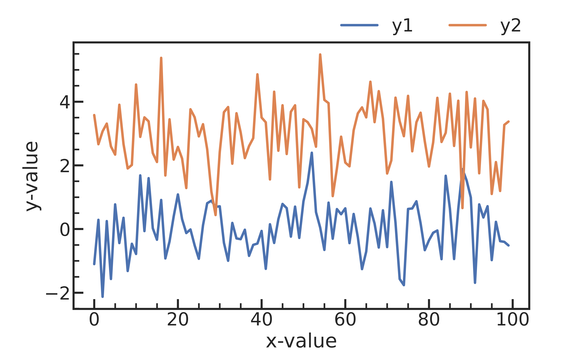

Matplotlib Cookbook
A matplotlib cookbook stylized for publication in astronomy journals.

Line Plots
Single
xdata = np.arange(100)
ydata = stats.norm.rvs(loc=0, size=100)
plt.plot(xdata, ydata)
plt.xlabel('x-value')
plt.ylabel('y-value')
Multiple
xdata = np.arange(100)
ydata_1 = stats.norm.rvs(loc=0, size=100)
ydata_2 = stats.norm.rvs(loc=3, size=100)
plt.plot(xdata, ydata_1, label='y1')
plt.plot(xdata, ydata_2, label='y2')
plt.yticks(va='top')
plt.xlabel('x-value')
plt.ylabel('y-value')
plt.legend(frameon=False)
Subplots
xdata = np.arange(100)
ydata_1 = stats.norm.rvs(loc=0, size=(4, 100))
ydata_2 = stats.norm.rvs(loc=3, size=(4, 100))
# Inner Element
nrows, ncols = 2, 2
fig, axs = plt.subplots(nrows, ncols, figsize=(5*1.2*ncols, 3*1.2*nrows), sharex=True, sharey=True)
for i in range(nrows*ncols):
ax = axs[i//ncols, i%ncols]
ax.plot(xdata, ydata_1[i], label=f"y1")
ax.plot(xdata, ydata_2[i], label=f"y2")
# Common legend
handles, labels = ax.get_legend_handles_labels()
fig.legend(handles, labels, frameon=False, loc='upper right', ncol=2)
plt.tight_layout(pad=0)
plt.subplots_adjust(top=0.90, right=1, wspace=0, hspace=0)